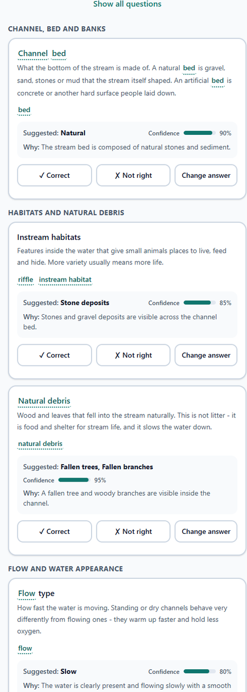
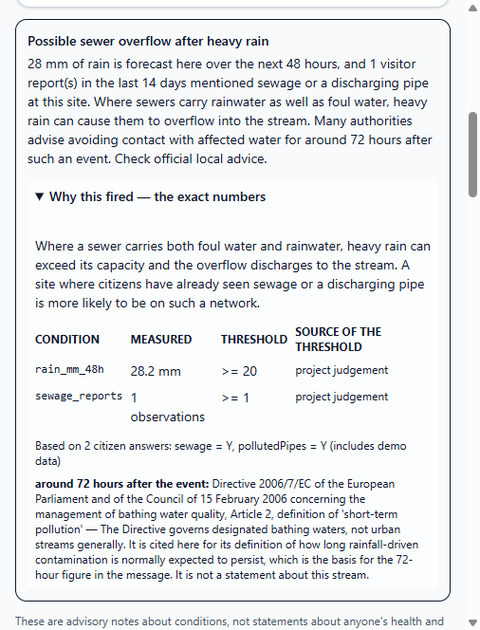

A second pair of eyes for citizen stream assessments — the citizen always decides.
Primary Track 1: Citizen Science UX · also 3 (AI-supported assessment), 2 (data to insight), 6 (early warning), 5 (community), 7 (FHIR)The API runs on a free Render instance. A scheduled ping every ten minutes keeps it awake; if it has been idle anyway, the first request takes about 42.7 s and every request after it is under a second. No account, no sign-in, nothing to install.
Urban streams are where ecosystem health and human health meet, and they are in trouble: across 100 urban stream sites in five European cities, the OneAquaHealth policy brief reports that “pharmaceuticals were detected in 91% of monitored sites”.
Monitoring that closely is expensive, so the gaps between official surveys are filled — if at all — by volunteers, who are asked ecology questions in vocabulary they were never taught.
StreamLens does not replace the expert. It makes the volunteer’s twenty minutes on the bank produce a record a scientist can actually use, and it refuses to guess on their behalf.
Photograph the reach upstream and downstream. A vision model drafts answers to the OneAquaHealth question set as suggestion chips, each with a confidence and a one-sentence reason pointing at something in the picture. The citizen accepts, changes or rejects every one. Plain-language glossary, six languages, works offline.
A stream health card built only from citizen-confirmed answers. A 48-hour alert that shows its own arithmetic: the measured value, the threshold it crossed, and where that threshold came from. Observed problems map to restoration measures from the OneAquaHealth D2.4 catalogue, cited to the page.
Quests computed from real gaps in the record — a site nobody has seen this season, a reach that needs a second opinion. Points for evidence quality and for filling gaps, never for volume. Teams on the leaderboard, never individuals. A wellbeing mirror reported only in groups of ten or more.
Monorepo: FastAPI + SQLModel on Render, React + Vite PWA on Vercel, Postgres on Neon — every tier free. 279 API tests and 22 web tests, none touching the network. Lighthouse mobile on the live site: 94 performance, 100 accessibility, 100 best practices, 100 SEO. Built 23–27 September 2026.
The model is told to answer “not sure” rather than guess, and to stay silent on any image with no watercourse in it.
Every code the model returns is checked against the published question set before a citizen sees it. An invented code is refused at confidence 1.0.
Every suggestion starts unanswered. The record stores the citizen’s answer and what the AI suggested — never the AI’s answer alone.
Every assessment exports as FHIR R4 — a LocationOah, one
ObservationIndicatorsOah per answered question, and a Provenance naming
the citizen by pseudonymous identifier and the AI as an assembler Device with its
model and prompt version. Validated with the official HL7 validator against the
hl7-eu/oah profiles: 0 errors, 0 warnings. A negative control — one Observation
deliberately broken — is committed alongside, to prove the profiles were really applied and not
silently skipped.


Research sites: OneAquaHealth / ENORA API, 106 sites across five cities. Restoration measures: D2.4 Catalogue of measures for urban aquatic ecosystems rehabilitation, Dias, M., Serra, S.R.Q. & Feio, M.J. (University of Coimbra), OneAquaHealth, Horizon Europe Grant Agreement 101086521, DOI 10.5281/zenodo.20040211, CC-BY-4.0. Problem statement: OneAquaHealth Policy Brief — Urban stream ecosystem health as a One Health priority, P da Silva, J.; Serra, S.R.Q.; Calapez, A.R.; Schmeller, D.S.; Freitas, Â.; Dantas, C.; Forio, M.A.E.; op den Akker, H.; Havrevold Henni, S.; Feio, M.J., 2026, DOI 10.5281/zenodo.21476580, CC-BY-4.0. Weather: Open-Meteo, CC-BY-4.0. Map tiles: © OpenStreetMap contributors, ODbL. Sample photographs: six Creative Commons or public domain images from Wikimedia Commons, each credited individually in the repository. StreamLens code: MIT.